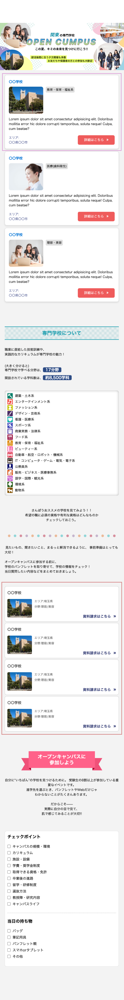
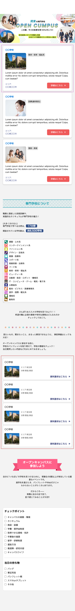
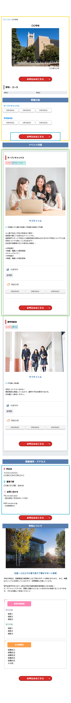
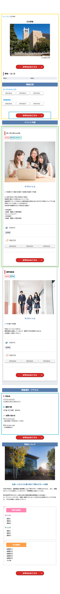
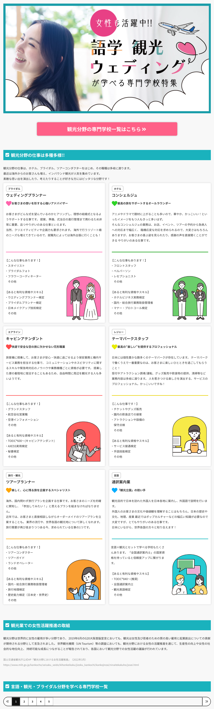

 

サイト内コンテンツの作成

語学・観光・ウェディング分野 特集ページ
- 担当範囲
- 情報収集 / 構成設計 / ライティング / ページ制作
- 目的・導線設計
- 特定分野への関心喚起から、学校一覧ページへの回遊を最大化。職種ごとの具体的なキャリアイメージを持たせ、自然に比較検討へ誘導する設計。
- UIデザイナーとしての工夫
- 職種情報をカードUIで整理。各分野のトーンに合わせたカラーコーディングとアイコンを採用し、読み物としての楽しさと情報の識別性を両立。